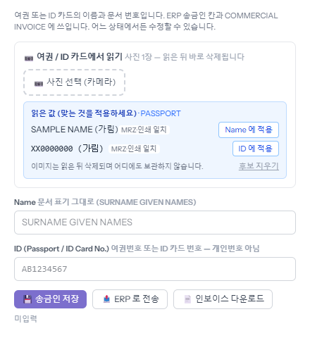
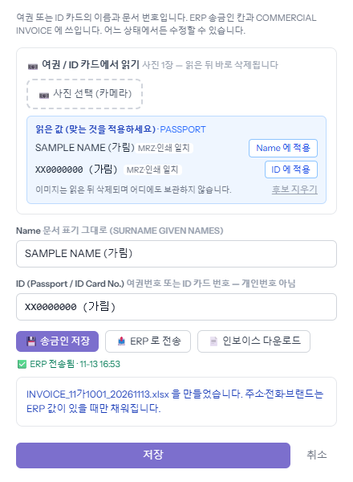

바이어가 돈을 보낼 사람(송금인)의 여권이나 ID 카드 사진을 받으면, 이름과 문서 번호를 읽어 ERP 송금인 칸과 COMMERCIAL INVOICE 에 넣습니다. 매입예정 목록에서 차를 눌러 [Invoice] 탭에서 합니다. 차가 어느 단계에 있든 됩니다.
「여권 / ID 카드에서 읽기」의 [사진 선택 (카메라)]으로 사진 1장을 고르고 [읽기]를 누릅니다. 20초 안팎이면 파란 칸에 읽은 이름과 번호가 나옵니다. 「MRZ·인쇄 일치」는 여권 아래 기계 판독줄과 인쇄된 글자가 같게 읽혔다는 뜻입니다. 사진은 읽은 뒤 바로 지워지고 어디에도 남지 않습니다.

맞으면 두 [적용]을 눌러 아래 「Name」·「ID」 칸에 넣습니다. 이름은 문서에 적힌 그대로(성 이름 순, 영문 대문자)입니다. [송금인 저장]으로 board 에 저장하고, [ERP 로 전송]을 누르면 ERP 송금인 칸에 들어갑니다. 아래에 「ERP 전송됨 · 시각」이 뜹니다.
회사 양식으로 된 엑셀 파일(INVOICE_차량번호_날짜.xlsx)이 내려받아집니다. 바이어 주소·전화·브랜드는 ERP 에 값이 있을 때만 채워집니다.
